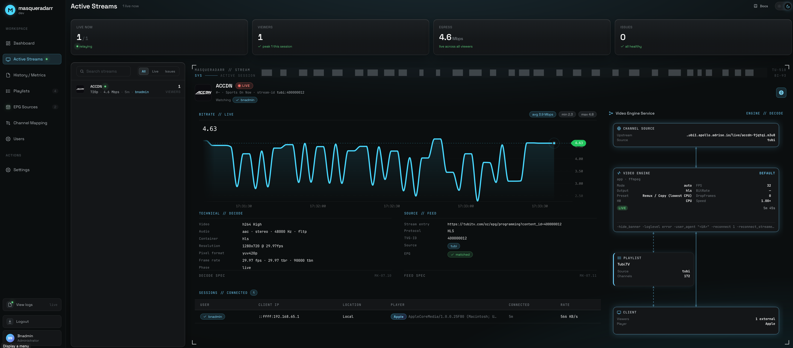

Watch it, schedule it, back it up
Everything you need to run masqueradarr day-to-day: live streaming telemetry, historical QoE analytics, system stats, categorized logs, the automatic scheduler, and full-system backup / restore.
Who's watching what, right now
A real-time monitor of everything currently being watched. Each session shows the channel, its playlist/source, the viewer, current bitrate, uptime, and a health indicator. It's live telemetry pushed over a WebSocket — no refresh button, held in memory, always the present moment.

A healthy session shows a steady bitrate and climbing uptime. A session flagged failing is one the server couldn't keep fed — worth investigating, and it drives the live pulse dot next to Active Streams in the sidebar. An empty screen is normal when nobody is watching. To investigate: note the channel + source, open View logs filtered to that source, and cross-check the channel on its Playlist detail.
Opening a session gives you four tabs that follow the bytes in order — SOURCE // FEED (which provider answered, in what wire format, and what was requested versus what is being served), INGEST // RING (the shared ingest and what it is holding), PLAYLIST // MANIFEST (the published window, its discontinuities, any ad break) and OUTPUT // FEED (what viewers actually received, and the amplification between the two). Arrow keys, Home and End move between them.
Empty values are written to be read, not guessed at: “passthrough — no local ring”, “no reading yet — needs two distinct ingest frames”, “the rewrite path is serving this channel, not the ring”. A missing number tells you which stage isn't running.
A stream running under local origin grows three extra rows in its detail card, next to the existing Delivery row: Ingest (<status> · N viewer(s) sharing, tinted amber when the status isn't ok), Ring (N seg · N.N MiB against that channel's own cap, plus · N evicted once eviction starts) and Upstream pulled (N seg · N.N MiB). Their absence is itself the signal that a stream is on the ordinary rewriting path. Do not read Upstream pulled against the bitrate chart above it — one is a single shared ingest, the other is egress across every viewer, so with N viewers they diverge by roughly N×. That divergence is the feature working.
When a channel's own upstream failed and one of its failover backups is carrying the stream, the session is badged failover → <child>, and its detail panel names the backup's position in the line. The parent may simultaneously show as probe-dead on its playlist — that is coherent, not a contradiction: the probe tests each channel on its own, while the session is being served by a stand-in.
The quality-of-experience record
Where Active Streams shows the present, History / Metrics shows the past: every completed viewing session, from persisted view-session history. It grows over time; a fresh install is empty.
Headline totals
Sessions, viewers, data served, and similar rollups across the recorded history.
Smooth or stutter
A distribution of buffering events — a long tail toward high buffering means trouble.
Fix the noisy few
The channels with the worst experience, surfaced so you can prioritize them.
Per-view timeline
Every recorded session; select a row for its full timeline. Toggle Sessions ↔ User Metrics to analyze by event or by person.

Live CPU & memory on the Dashboard
The admin Dashboard pushes live system-performance stats over a WebSocket, alongside the stat cards (Playlists, Channels, Channels live/down, EPG sources, Unmatched) and the Activity panel (live Active Sessions + recent History). Glance at Channels live vs down to spot a source problem, and Unmatched to know when to head to Channel Mapping. The Playlists and EPG Sources panels beneath list alphabetically, so a name stays where you last saw it as the install grows.
Memory pressure — the one tile whose colour is the reading
The performance strip carries six tiles: CPU, Memory, Memory pressure, Disk I/O, Network, DB connections. Memory pressure is the only visibility you have into the Rust sidecar's RAM — Node's own memory figure is the Node process and can never see the origin rings. Its big number is the total ring bytes across every channel, and the colour is the verdict: green below 15% of the box's total memory, amber at 15%, red at 30%. That 30% mark is sized against a real case — roughly 50 origins at the 25 MiB default is about 1.2 GiB, which is where a 4 GB Pi starts to hurt.
| The tile reads | Means | What to do |
|---|---|---|
| 0 B · no active origins | The sidecar is alive and no channel is currently ringing. | Nothing. This is the resting state once the last ingest closes. |
| — · not available | Nothing has ever reported, or a frame that did report live origins has been silent for 15 s (six missed reports). | On a default install this is normal — origin mode is off. Mid-stream, it means the sidecar went quiet: check the proxy logs. |
| green · N origins · <15% | Rings are held and comfortably inside the box. | Nothing. |
| amber ≥ 15% · red ≥ 30% | The sum of every channel's ring is a real share of the machine. There is no global ceiling — originRingMb bounds one channel only. | Lower originRingMb, or run fewer channels as origins. Note an ingest holds its RAM for 30 s after its last viewer leaves, so pressure can be high with an empty Active Streams screen. |
“Not available” and “no active origins” look similar and mean opposite things. The tile is deliberately grey when it has no reading, so unknown can never be mistaken for healthy. A green 0 B means the engine answered and is quiet; a grey — means nobody answered.
MongoDB-backed application logs
Every [tag] msg the server logs is persisted to the Log model (14-day TTL) via an injected sink, and fanned out to a live "View logs" drawer (/api/logs REST + /api/logs-stream WebSocket, admin-only). A tag→category map derives one of 14 categories, at three levels — info · warn · error.
proxy holds the Rust data-plane's full resolve→fetch→rewrite→serve lineage, ingested over the log seam (POST /api/internal/log) — persisted without a console re-print, since the sidecar already printed to its inherited stdout. failover is the newest, and the other one written from both planes: Node records group saves, EPG cascades, auto-disbands and exhausted chains (naming the parent and its playlist); Rust records the walk itself (carrying the session id). See Playlist Failover. The single logLevel (1|2|3) knob on Settings gates verbosity for every subsystem, Node and Rust alike, live with no restart.
| Log level | You get | Use it when |
|---|---|---|
| 1 — lifecycle + issues | Warnings and errors only. These are never gated: whatever the level, a real problem is written. | A quiet, steady install. Nothing you need is lost — only the narration. |
| 2 — and milestones | Plus the checkpoints: a sync started and finished, a stream established, a group was walked. | The default. Enough to reconstruct what happened without reading every hop. |
| 3 — and full lineage | Plus every step: each resolve hop, each poll, each ring push and evict. | Diagnosing one channel. Verbose enough that you want to turn it back down afterwards. |
There are still 14 categories. iop (input operation — resolve, poll, fetch, decrypt, ring push/evict) and oop (output operation — manifest render, segment serve, TS concat) are tags that both resolve to proxy. The split is attribution within the engine, not a new bucket: once one ingest feeds many viewers, “the channel is stuttering” has two possible causes, and the tag says which side to look at. Filter to proxy as before, then read the tag.
The same rule holds for the Rebel IPTV companion: its rebel and docker tags (reachability, update checks, pull / recreate / rollback) file under settings, where the tab that drives them lives — still 14 categories.
Keep the catalog fresh, automatically
A croner-backed runtime scheduler runs the persisted cronjobs collection. Enabled jobs register at boot; a PUT/DELETE on /api/cronjobs re-registers or unschedules immediately. Each tick dispatches on its targetType.
| targetType | What the tick does |
|---|---|
| epg-source | EPG re-sync |
| playlist | Playlist source live-sync |
| playlist-m3u | Playlist M3U (+ XMLTV guide sibling) recompose |
| backup | Scheduled on-disk backup |
| channel-probe | The Rust-assisted channel health sweep |
Three tabs (four with Rebel IPTV), and what lives on each
Settings is split into General, Video Config and Advanced — plus a fourth, Rebel IPTV, only when that optional companion is enabled. Knowing which is which saves a hunt — in particular, the video engine's (Default) config is on Video Config, not Advanced.
The install itself
Domain — the load-bearing one, woven into every published playlist URL — plus display name, time zone, the global log level, the DNS nameservers (they govern both Node's fetches and the Rust data plane's upstream lookups, live), and backup / restore / maintenance.
How video is served and watched
The channel probe schedule (a source that opts out of bulk checks, such as DaddyLive, is named there as never probed), the Video player choice below, and the Video Proxy Engine (Default) panel — every knob on the tuning table, including Local origin, Ring size and Smooth ad transitions.
Per-provider and workspace-wide
Geolocation, the Playlist Domain / Configuration JSON (below), the dulo sign-in panel (hidden while dulo's enable is false), and the Custom Tags registry.
Only when the companion is on
Status, updates (Check now, Update now with automatic rollback, an idle-only auto-update window), the playlist API key and stream cap, and Open Rebel IPTV. See Rebel IPTV.
Playlist Domain / Configuration
One JSON document, shown with syntax colouring, holds the per-provider settings for the providers whose home moves or needs tuning. It replaces the old DaddyLive Player Source control. Each entry has three keys:
| Key | What it does |
|---|---|
| enable | false hides the provider: it leaves the Add Playlist picker (provisioning refuses it) and its settings card is hidden — for dulo, the sign-in panel. A visibility switch only: a playlist you already added keeps syncing and playing. |
| domain | The site the provider runs on today, as a bare host. DaddyLive's is its content mirror, pinned — there is no mirror auto-picker, so when DaddyLive moves, change it here and re-Sync. dulo's drives every dulo-facing hop; saving a changed dulo domain signs the dulo session out (you're warned first), because a session belongs to the site it came from. |
| extendedProperties | The provider's own options — DaddyLive's defaultPlayer ("auto" or a player number; a per-channel choice in the channel drawer still wins). |
Test probes every listed domain using the editor's current text, saved or not, and reports per provider the address tried, the HTTP status, the response time and how many channels it serves. Save validates the whole document strictly — every problem listed by its path, nothing saved until it's clean — then applies it live. The saved document lives in the Settings record (so backups carry it) and is mirrored to playlist-config.json beside the infra config (/app/config/; /data/ on the all-in-one; MASQUERADARR_PLAYLIST_CONFIG overrides the path). The file is a mirror, rewritten on every boot and save — edit the document in the UI, not the file.
The Video player choice
Settings → Video Config → Video player decides what the channel slide-out gives you — and only the slide-out. It has three positions:
| Player | What the channel drawer shows | Best for |
|---|---|---|
| In-app video player (default) | An embedded player plus a live bitrate chart, inline in the drawer. | Glancing at a channel while you work — checking it plays at all. |
| Ultimate video player | Those two are replaced by a single Launch Ultimate Video Player button that opens a dedicated player window. | Actually watching a channel rather than glancing at it. |
| Debug video player | A diagnostic player with a live HLS status readout and an event log. | Troubleshooting a playback problem on one channel. |
The Ultimate window is a full-size picture with the launching playlist's channel list pulled out from the right edge and a what's on now / next strip under the video. Keyboard: F full screen, M mute, C channels. Your volume and mute choice are remembered between channels and windows.
Launch from any playlist row
Every playlist row — on Playlists and on the Dashboard's Playlists panel — carries a play button that opens the Ultimate player scoped to that playlist, starting on its first channel. It's there whatever the Video player setting says, so you can keep the slide-out on the in-app player and still launch the big one. It's greyed out on a playlist with no channels yet (a built-in before its first sync).
Relaunching reuses it
A second launch reuses the same player window rather than piling up pop-ups — it simply switches to the new playlist.
Channel-rail order
The channel switcher lists channels A–Z by name; the A–Z button in its header flips it to channel-number order (#), unnumbered channels last. Provider numbers are often meaningless in a clone playlist, hence the name-order default. The choice is remembered in this browser, and a row launch lands on the first channel of the current order.
Allow pop-ups for this site, or the window can't open. A blocked launch reports “Pop-up blocked — allow pop-ups for this site to open the Ultimate Video Player.”
Browsers block audio until you interact with the page. When that happens the picture says so, and one click on the banner — or the M key — turns sound on. The window opens without a tab strip, toolbar or bookmarks bar, but the thin strip showing the site address is forced on by the browser itself and cannot be turned off from the app; use Full screen for a completely bare window.
It requests streams without a playlist qualifier, exactly as the in-app player does — so it resolves against the (Default) proxy config every time. Enabling local origin on one playlist's Custom override does not change what you see in the Ultimate player; only the Default does. (A source that declares originRequired — Rebel IPTV — runs through the origin regardless.)
One-click snapshots of the whole system
Full-system gzip
A gzipped snapshot of every collection — downloaded, or written to a configured backup directory on a schedule. Secrets are stripped: password hashes, stream tokens, provider session tokens, the MaxMind licence key, headerOverrides and the Rebel IPTV playlist key.
In-place re-orchestration
Restore from an uploaded backup or a saved file; the restore re-orchestrates the dependent subsystems (boot init, DNS, scheduler) in place.
Indexes & reset
From Settings: rebuild MongoDB indexes, or reset the workspace (wipe content, keep users / settings).
Domain (Settings) is built into every published playlist URL — changing it cascades and rewrites the URL of every playlist. Set it to your real public address once; any links users already saved point at the old address until they re-copy the updated URLs. Outbound-fetch DNS nameservers and the global logLevel also live in Settings.
Backup / restore is also the migration path onto the all-in-one image's mongo4.4- tags: a database written by MongoDB 7.0 can't be opened by 4.4, so take a backup on the 7.0 image, boot the 4.4 image on a fresh /data volume, then restore.